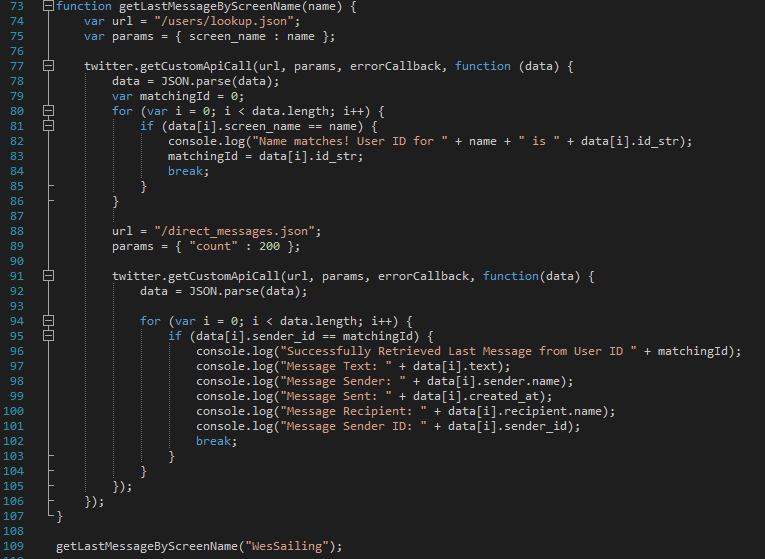
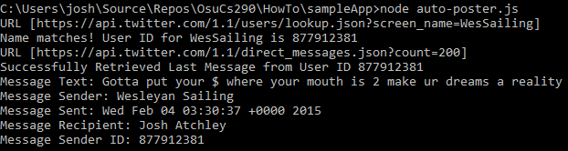

Hold on, it's about to get a lot more complicated (and uglier) in here.

Yikes! There's a lot to unpack here, but if we break it down in pieces you'll see it's not so bad.
Like before, Line 74 defines the URL for the call we want to make. This time we're looking through all of Twitter for a user with a screen name that matches the given name.
We construct our params like before, and call our custom getter again.
Line 80 is a for loop that iterates through each piece of data we get, just in case it somehow returns more than one JSON object. When we find our match, we save that user's ID, log that result to the console, and
construct our next GET request.
Line 88 and Line 89 might look familiar to you, since these are the same values we used for our earlier function to get the most recent message. However, here we are going to check up to the limit allowed by
the Twitter API in a single GET call, which is 200 records. We need to do this so we can find older messages.
Line 94 begins our for loop in the success callback, where we iterate through our returned messages and try to match the message's sender_id to the matchingId for our search parameter username.
When we find the most recent message from that user, we log some basic information about the message to the console. The result of that should look something like this:

And there we have it, a message of wisdom from the sailing team at my alma mater, from February 2015 no less.
Some closing thoughts and ideas for future development.
Previous Next